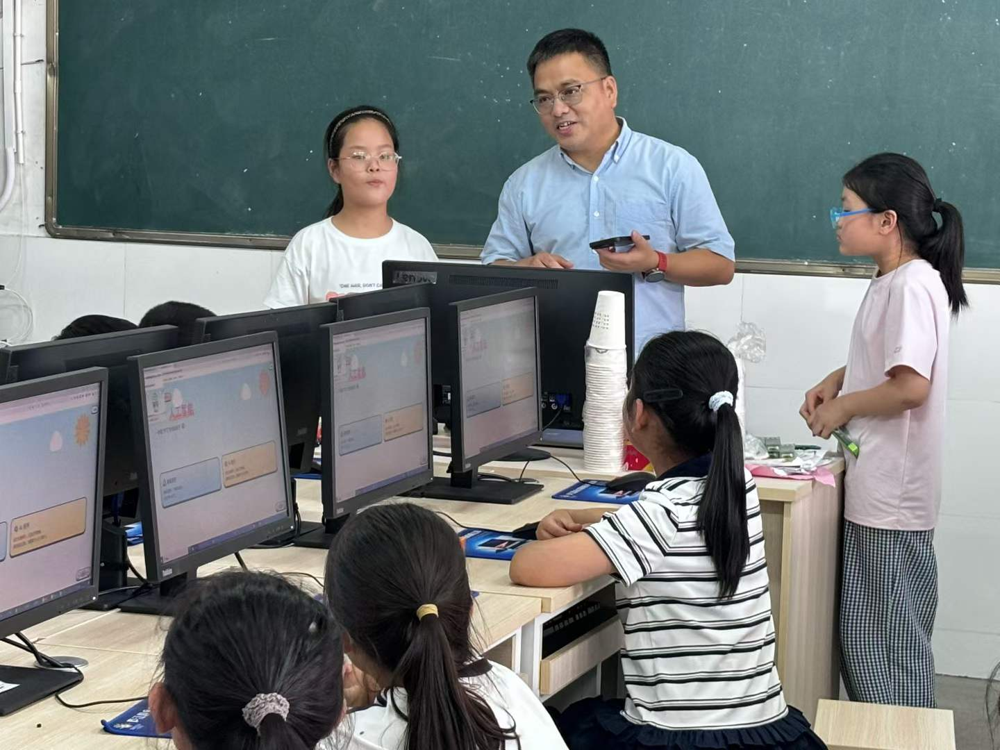
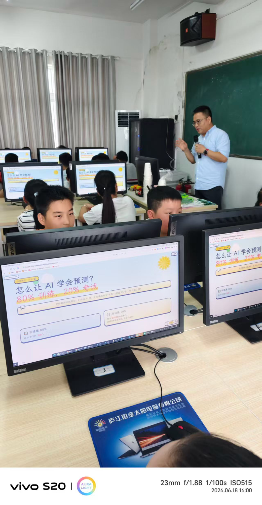
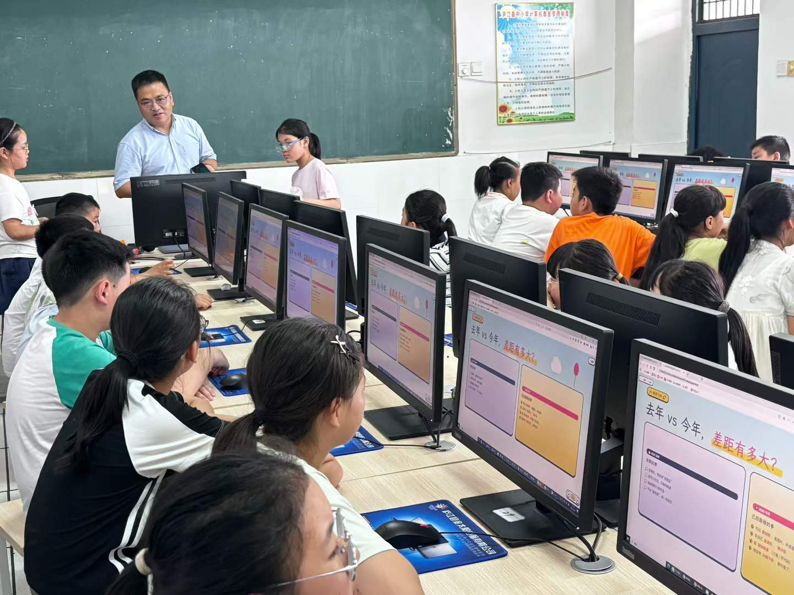

课堂实录 · 2026.06.18
一个下午，他们不仅看懂了 AI，还亲手把"清溪镇"从洪水里救了出来。
今天下午，我又一次走进女儿班级，给四年级的 50 个小朋友讲了一节关于 AI 的课。
这是我连续第二年来这个学校——去年他们三年级，那时候问"谁知道 AI"，举手的没几个；今年再问，呼啦一片手举起来。
更让我没想到的是：当我说"今天你们要亲手做一个 AI"——孩子们的眼睛全亮了。

我原本担心：四年级，能听懂"训练集 / 测试集 / 概率"这些词吗？
结果完全相反。
当我讲到"概率"这个词，话音还没落——
有个小男生立刻接上："一个硬币抛出去，正反两面的概率就是 50%！"
那一刻我意识到——孩子对新知识的接受度，远比我们想的要强。问题从来不是他们听不懂，而是大人讲得不够好。

名字叫《洪水预报员 · 清溪镇保卫战》。一个浏览器就能玩的 AI 素养游戏，专门为小学三、四年级孩子设计。不用下载、不用注册、断网也能玩。
孩子要在游戏里扮演四种角色，亲手走完 AI 的四个步骤：
10 分钟一局——玩完一遍，他们就亲手做了一个 AI 洪水预报系统。

距离第一版上线后，我们陆续做了下面这些调整。目标只有一个：让小朋友听得懂、玩得爽、学得到。
所有材料完全开源、免费、可商用。带回去给孩子继续玩、给班级演示都可以。
很多人问我：四年级的孩子，讲 AI 是不是太早了？
我的回答是：一点都不早。
等他们大学毕业的时候，AI 早就长成了我们今天想象不到的样子。我们不能等到那时再去教——就像不能等孩子上大学才教他认字。
如果你是小学老师，欢迎把这套材料带进你的课堂；如果你是家长，欢迎陪孩子在家玩一遍。
这件事，我会一直做下去。
项目地址：github.com/brucegu17/raincheck
欢迎转发，让更多孩子早一点遇见 AI。